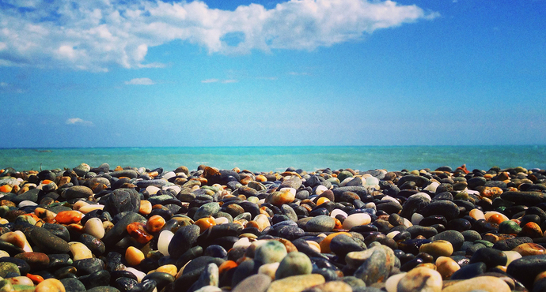
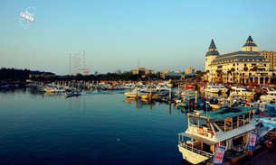
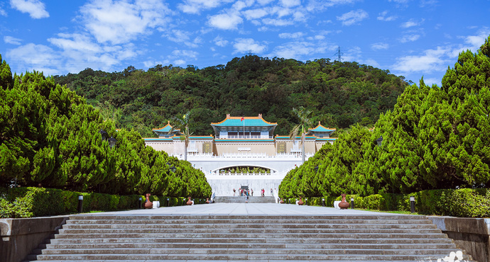
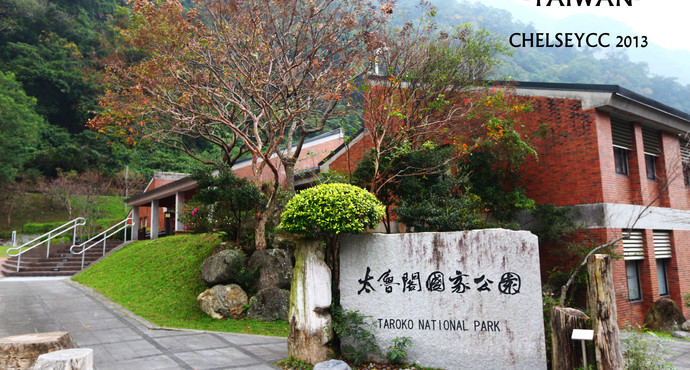
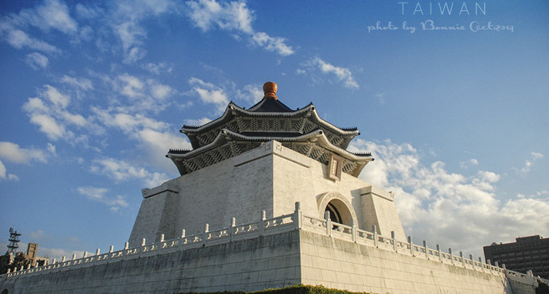

Taroko National Park, Taroko National Park) is the fourth in Taiwan "National Park", located in the eastern part of the island, in Hualien county, taichung county, nantou county three administrative region. In the park, the first thing in Taiwan crosses the highway, called the middle highway system. Taroko national park features canyons and cliffs. The mountains on the other side of the park have preserved many of the ice age's edgels, including the mountain of peppers. Tairuge also became the name of the railway train. Its main buildings are changchun temple, swallows mouth, jin heng park, jiuqu cave, cimu bridge and tianxiang. The foot of the main natural landscape has the cone bluffs, liufang bridge, dayu ridge, Bloch bay, sand card 礑 trails, green water confluence trails, qingshui cliff trails, poplar trails, suddenly pavilion trails, lotus pond trails, gold canyon.
{kind=link}
{kind=link}
{kind=link}
![ Seven star pool is located in the new village of beipu in Hualien county, at the east side of Hualien airport, and the seven star pool is a bay that stands out on the side of the nose of the meilun. Seven star lake used to be Hualien development of fishery's most prosperous place home, really scattered lakes are scattered in his early years, the seven stars pool now generally mean Mellon, industrial area and north of Hualien airport area, coastline, more than 20 kilometers around the beach width of 100 meters, mostly belongs to the gravel beach, let seven star lake become the best in the outskirts of Hualien treader pick up stone. Seven star lake and Hualien important rivers area nowadays, have dongchang from north to south, the gold, jia feng, and other three fishing grounds, home want to taste the fresh seafood people also came to the seven stars pool sample.](images/qixingtan.jpg){kind=link}
![ The freshwater fisherman's wharf is located in the freshwater town of taibei county, and the fresh water river estuary, the second fishing port of the old name, was completed in the year of the republic of China. The freshwater fisherman's wharf is famous for its "fresh New Year's photo" on the east of the danton mountains, the west across the freshwater river and the guanyin mountain. Agriculture committee by the executive yuan in order to improve the fishing port assignments and fishing village living environment, since the year of 87 selected here for multifunctional demonstration fishing port, subsidies, and will to be a fisherman's wharf planning both fisheries development and quality of tourism leisure park, successful fishing port function diversification direction development, at present, fisherman's wharf after soil preparation to build, and is now important tourism activities in Taipei county leisure venues, fisherman's wharf side with a lot of fishing boat and cruise ships, now more often become AD shooting scene.](images/yurenmatou.jpg){kind=link}
![ The National Palace Museum, also known as the National Palace Museum in Taipei, is the National Palace Museum. It is the largest museum in China and the largest museum in Taiwan. It is also one of the three major museums in China. The Palace Museum in Taipei is located in the district of the city of Taipei to the second section 221, which was built in 1962 and was completed in the summer of 1965. It covers an area of about 16 hectares. In order to imitate the traditional Chinese palace buildings, the main body building is four floors, the white wall green tile, the courtyard is in the plum blossom shape. In front of the courtyard, there are five six-column skylights, the whole building is dignified and elegant and rich in national characteristics. Taipei's Palace Museum courtyard from nanjing national central museum collection of Taiwan, the national museum of Beijing the imperial palace, the national library of beiping hidden from the Forbidden City in Beijing, shenyang, such as the Forbidden City, summer resort, the Summer Palace, providence, quo zi jian of the place such as the royal garden and old Tibet. The bronze ware of the shang zhou is a rare treasure of ancient times, such as jade ware, ceramics, ancient books and paintings. The pavilion changes its exhibits every three months. By the end of 2014, the collection had reached 696, 000 cultural relics.](images/taibeigugong.jpg){kind=link}
![ Taroko National Park, Taroko National Park) is the fourth in Taiwan "National Park", located in the eastern part of the island, in Hualien county, taichung county, nantou county three administrative region. In the park, the first thing in Taiwan crosses the highway, called the middle highway system. Taroko national park features canyons and cliffs. The mountains on the other side of the park have preserved many of the ice age's edgels, including the mountain of peppers. Tairuge also became the name of the railway train. Its main buildings are changchun temple, swallows mouth, jin heng park, jiuqu cave, cimu bridge and tianxiang. The foot of the main natural landscape has the cone bluffs, liufang bridge, dayu ridge, Bloch bay, sand card 礑 trails, green water confluence trails, qingshui cliff trails, poplar trails, suddenly pavilion trails, lotus pond trails, gold canyon.](images/tailugegongyuan.jpg){kind=link}
![ The national father's memorial is located in the fourth section of renai road, Taipei, Taiwan, to commemorate the 100th anniversary of sun yat-sen's birth. Dr. Sun yat-sen was a pioneer of the Chinese democratic revolution, and the founder of the republic of China was an outstanding figure in the history of China. The museum occupies an area of 35, 000 floors and is a palace building. The pavilion is surrounded by zhongshan park, and is decorated with nine zigzag Bridges, ponds, fake mountains and willow trees. The four exhibition rooms are beautifully decorated and designed to showcase the history of the republic of China and the art of modern art. In addition, the exhibition hall, lights and sound equipment are first-class, often holding high level concerts. The national father's memorial hall is a comprehensive venue for public outdoor activities, leisure and appreciation of art and cultural performances.](images/zhongzhnegjiniantang.jpg){kind=link}